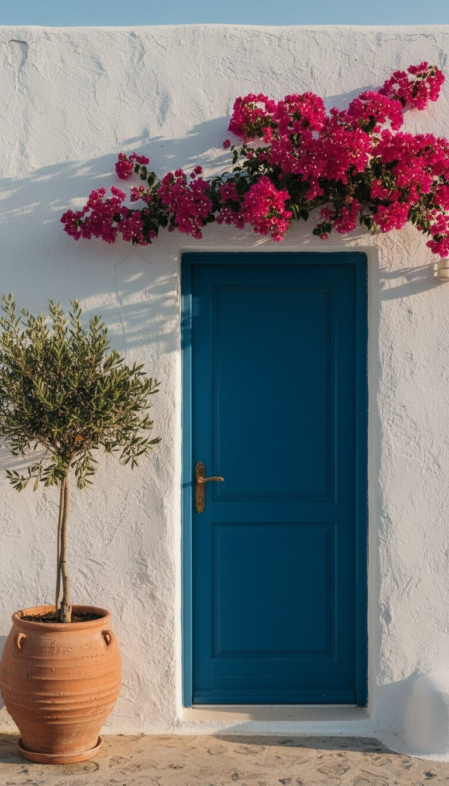

Ensemble de trois vases Jumee en céramique blanche
Trois vases blancs émaillés à la main, de tailles décroissantes, pour une niche de plâtre ou un rebord de fenêtre.
Voir sur AmazonMaison concept générée par IA. Ni une vraie propriété ni un vrai produit. Elle n’est ni à vendre ni à louer. Les produits suggérés plus bas sont de vraies offres Amazon, choisis dans l’esprit de la maison. Les images de cette page sont générées par IA; ce ne sont pas des photos d’un lieu réel.
Vous êtes en haut d’un étroit escalier extérieur, et il plonge à pic sous vos pieds. Des deux côtés, les murs sont en plâtre blanc rugueux, arrondis à la main à chaque arête. Une branche de bougainvillier magenta déborde de l’un d’eux. Devant et en contrebas, les toits plats et les petites terrasses blanches de la maison descendent la colline, l’un sous l’autre.
On ne voit pas encore la mer. Mais on sent qu’elle est là, quelque part sous le dernier mur blanc.
Certains liens de cette page sont des liens d’affiliation Amazon. Nous pouvons toucher une commission, sans frais supplémentaires pour vous.
En tant que Partenaire Amazon, je réalise un bénéfice sur les achats remplissant les conditions requises.
Premier arrêt dans la descente : une porte. Un épais mur blanchi à la chaux, du bois peint d’un bleu profond, une poignée de laiton usée, du bougainvillier au-dessus et un petit olivier dans un pot de terre cuite à côté. Le soleil de fin d’après-midi pose des ombres douces sur le plâtre, et on y voit chaque petite imperfection, la trace d’une main et d’une truelle.
C’est ce qui rend vivante une maison des Cyclades. Rien n’y est parfaitement droit, et rien n’est censé l’être.

À l’intérieur, il fait frais tout d’un coup. Le salon est tout en plâtre blanc lissé à la main, aux coins arrondis, avec un sofa de plâtre intégré couvert de coussins de lin. Une niche en arche dans le mur accueille quelques vases de céramique; le plafond à poutres de bois est garni de roseaux tressés; un tapis tissé repose sur un plancher de pierre pâle, et un seul rayon de soleil tombe d’une petite fenêtre profonde.
Des murs épais et de petites fenêtres : c’est comme ça que les maisons des îles restent fraîches dans la chaleur depuis des siècles, bien avant la climatisation. C’est simple, et c’est magnifique.
Une niche de plâtre avec quelques vases blancs, c’est l’un des détails les plus discrets de la maison, et l’un des plus faciles à reproduire.
Trois vases blancs émaillés à la main, de tailles décroissantes, pour une niche de plâtre ou un rebord de fenêtre.
Voir sur AmazonChaque palier de cette maison a sa propre pièce extérieure, et chacune attrape un moment différent de la journée. Celle-ci est petite et entourée de murs : une pergola de bois qui dessine des rayures d’ombre sur le sol, un banc blanc intégré avec des coussins bleus et blancs, un olivier dans un grand pot d’argile, et une petite table avec une carafe d’eau et un bol de citrons. Le mur est assez haut pour cacher la vue. Ici, il n’y a que vous, l’ombre et le ciel.
Des rayures bleues et blanches sur un banc blanc, et tout le style est là. Gardez-les à couvert, par contre : les housses ci-dessous ne sont pas faites pour la pluie.

Des rayures marine et crème tissées, avec des glands aux coins; la fiche précise qu’elles ne sont pas imperméables, alors on les garde sous la pergola.
Voir sur AmazonUn passage étroit continue, avec des marches qui descendent entre deux hauts murs blancs vers une ouverture lumineuse, tout en bas. Une main courante peinte en bleu, des géraniums rouges en pot sur les marches. Au bout, l’ouverture n’est que lumière blanche. On ne voit toujours pas ce qu’il y a dehors.
C’est le tour que joue la maison, et la vidéo vous le joue aussi. Chaque tournant de l’escalier cache la vue un peu plus longtemps.
Puis on arrive au palier le plus bas, et la voilà. Une longue piscine à débordement d’eau turquoise limpide, dont le bord lointain se perd directement dans le bleu profond de la mer Égée. Des murs et des marches blanches. Deux chaises longues en lin, un petit olivier, la côte rocheuse et l’horizon grand ouvert. La lumière est chaude, c’est la fin du jour, et l’eau est partout.
C’est le genre de moment qui vous coupe la parole.

Une mince serviette de coton turc qui sèche vite, c’est ce qu’on garderait pliée sur ces chaises longues : assez légère pour descendre toutes ces marches, et déjà sèche avant la prochaine baignade.

Une serviette mince à tissage plat en coton turc, qui sèche vite, offerte en plusieurs couleurs.
Voir sur AmazonEnfin, la caméra recule au-dessus de la mer, et on voit toute la maison d’un coup : une cascade de cubes blancs empilés sur la colline rocheuse, chacun avec sa terrasse, ses volets bleus, son bougainvillier et ses oliviers, des escaliers blancs en zigzag entre les paliers et la terrasse de baignade tout en bas, juste au-dessus de l’eau.
Vue de la mer, on dirait qu’elle a poussé là.
Nous, oui, et on sait déjà quelle terrasse on choisirait : celle entourée de murs, avec ses rayures d’ombre, pour l’après-midi, et la terrasse de baignade pour la dernière heure de lumière.
Dites-nous en commentaire sous la vidéo si vous y emménageriez, et laquelle des cinq maisons de rêve de la semaine est la vôtre.
Les images de cette page ainsi que les visuels et la voix de la vidéo sont générés par IA. Il s’agit d’une maison concept, pas d’une vraie propriété.
Les produits ci-dessus sont des suggestions dans l’esprit de la maison; ils n’apparaissent pas dans la vidéo. Détails des produits : chaque fiche Amazon.com liée (en anglais), consultée le 23 novembre 2026 (America/Toronto).